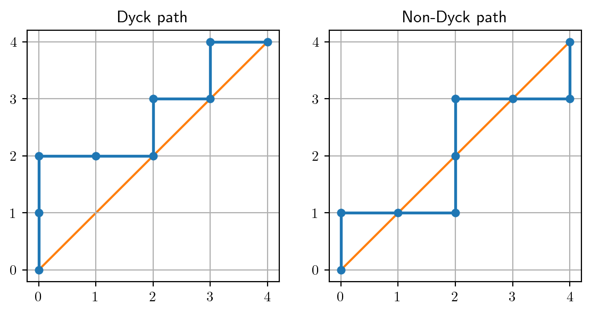
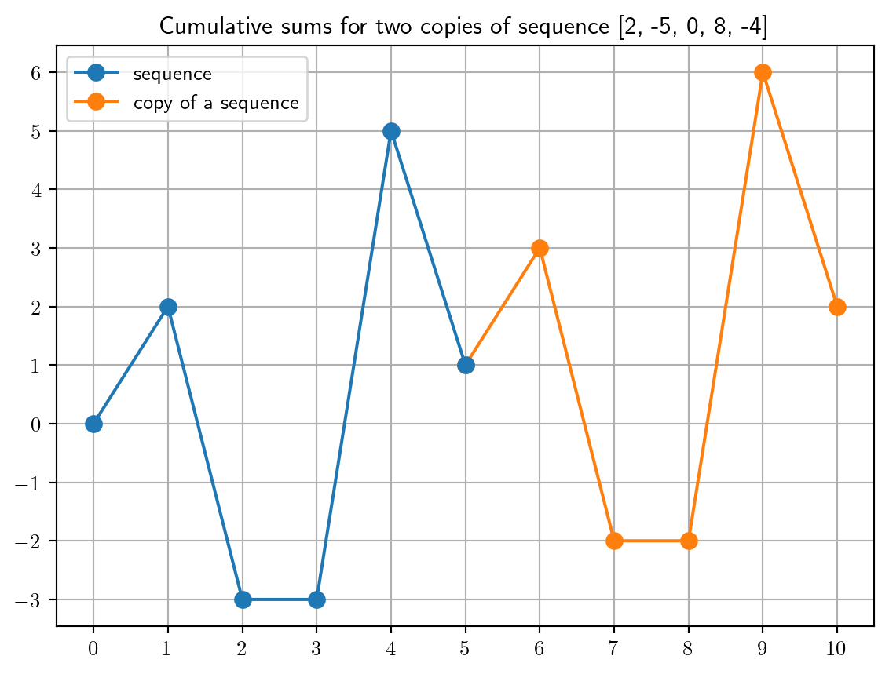
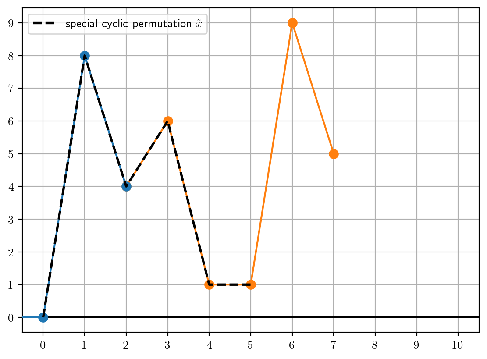

Counting paths on square lattice using cycle permutations
combinatorics
Author
Konrad Patucha
Published
May 3, 2026
Motivation
In this post I would like to show two methods to count number of Dyck paths - special family of paths on square lattice. There are three main reasons why I think this is interesting problem:
It belongs to a family of very common counting problems (here is a YouTube video by Numberphile about these problems)
The first method I will be presenting uses neat graphical trick which makes the problem very easy
The second method is more elaborate but highlights connection to cycle permutations which is useful in high-order petrubation theory in quantum mechanics (method I will be describing in future posts)
Both methods were briefly described in this Stackexchange answer. I’ve learned about Raney’s lemma from Qiaochu Yuan blog [1] (although not named Raney’s lemma) and Tyler Neylon blog [2].
Dyck path is a path on a square lattice, that goes from \((0,0)\) to point \((n,n)\) using only UP and RIGHT steps, and is always above or at most touches line \(y=x\) (it cannot cross this line).
Maybe it is not common convention but let’s call Dyck path from \((0,0)\) to \((n,n)\)Dyck path of order \(n\)
Code
import matplotlib.pyplot as pltfrom matplotlib.axes import Axesfrom itertools import accumulateimport numpy as npfrom scipy.special import combplt.rcParams["text.usetex"] =Truedef seq_to_path( seq: list[int], starting_point: tuple[int, int] = (0, 0)) ->tuple[list, list]:"""Map list of steps to a path on a square lattice - 1 == UP - 0 == RIGHT Parameters ---------- seq : list[int] Sequence of steps starting_point : tuple[int, int], optional Point at which to start a path, by default (0, 0) Returns ------- tuple[list, list] List of x and list of y coordinates of points on a path """ steps = np.array(seq)# Concatenate [0] at the start to represent the initial starting point shift x = starting_point[0] + np.concatenate(([0], np.cumsum(steps ==0))) y = starting_point[1] + np.concatenate(([0], np.cumsum(steps ==1)))return x, yax_good: Axesax_bad: Axesfig, (ax_good, ax_bad) = plt.subplots(1, 2)ax_good.set_title("Dyck path")dyck_path = seq_to_path([1, 1, 0, 0, 1, 0, 1, 0])ax_good.set_aspect(1)ax_good.plot(dyck_path[0], dyck_path[1], marker=".", lw=2, ms=10)ax_good.plot([0, 4], [0, 4], zorder=0)ax_good.grid()ax_good.set_yticks([0, 1, 2, 3, 4])ax_good.set_xticks([0, 1, 2, 3, 4])ax_bad.set_title("Non-Dyck path")non_dyck_path = seq_to_path([1, 0, 0, 1, 1, 0, 0, 1])ax_bad.set_aspect(1)ax_bad.plot(non_dyck_path[0], non_dyck_path[1], marker=".", lw=2, ms=10)ax_bad.plot([0, 4], [0, 4], zorder=0)ax_bad.grid()ax_bad.set_yticks([0, 1, 2, 3, 4])ax_bad.set_xticks([0, 1, 2, 3, 4])plt.show()

Sometimes you can find different but equivalent versions of the definition e.g.:
path is always below\(y=x\)
path is from \((0,0)\) to \((2n,0)\), using only diagonal moves and never dips below line \(y=0\) (kind of like ASCII mountain range built using symbols \ and /)
path from \((0,0)\) to \((n,n)\) using UP and RIGHT steps, where number of RIGHT steps at any point is less than or equal to number of UP steps
General UP/RIGHT path from \((0,0)\) to \((n,n)\) consists of \(n\) UP steps and \(n\) RIGHT steps - in total \(2n\) steps. To count how many unique paths (not only Dyck paths) there are in total we need to determine in how many ways we can place \(n\) UP steps in \(2n\) places (the rest will be taken by RIGHT steps). This is exactly unordered sampling without replacement, so we have: \[
N_\text{all paths} = {2n \choose n}
\tag{1}\]
Counting Dyck paths - graphical method
The problem is the following:
How many Dyck paths from \((0,0)\) to \((n,n)\) are there?
Imagine a non-Dyck path - at some point it crosses the \(y=x\) line. Let’s call first step that makes the path a non-Dyck path the bad step - it causes the line to cross the \(y=x\) line. Now reflect the part of the path from start up to the bad step with respect to line \(y=x-1\).
When we connect reflected part and the rest of the path we get a path from \((1,-1)\) to \((n,n)\). In fact, each non-Dyck path will be mapped to different path from \((1,-1)\) to \((n,n)\) and vice versa. To count paths from \((1,-1)\) to \((n,n)\) (so non-Dyck paths equivalently) we can use same argument as counting all paths. This means that we have \(2n\) steps in total of which \(n-1\) are RIGHT steps:
\[
N_\text{non-Dyck paths} = {2n \choose n-1}
\]
Together with Eq. 1 this gives us total number of Dyck paths of order \(n\) as: \[
N_\text{Dyck paths} = {2n \choose n} - {2n \choose n-1} = \frac{1}{n+1} {2n \choose n}
\tag{2}\]
As promised, we got result that is famous in counting problems and is called Catalan number (in the Wikipedia article you will also find this proof in section Second proof)
Raney’s (cycle) lemma
To get to the second method let’s first discuss Raney’s lemma (there is more general cycle lemma [3] but here we need this particular version):
We have sequence of \(n\) integers which sums up to \(1\):
\[
\sum\limits_{i=1}^n x_i = 1
\tag{3}\]
There is only one cycle permutation of this sequence \(x_i\rightarrow \tilde{x}_j=x_{i+c \bmod n}\) for which all cumulative sums are greater than \(0\): \[
\sum\limits_{j=1}^s \tilde{x}_j > 0\quad \text{for} \quad s \in [1,2,\dots,n]
\tag{4}\]
To prove Raney’s lemma we can use visual proof.
First, let’s glue second copy of a sequence to our original sequence so we have a sequence of length \(2n\) which satisfies: \[
x_{i+n} = x_i
\]
If we plot cumulative sums of this extended sequence we get something like this:
Code
seq = [2, -5, 0, 8, -4]cum_sums =list(accumulate([0] + seq)) # we start from 0ext_cum_sums =list( accumulate([cum_sums[-1]] + seq)) # we start from last element of first sequencemin_cum_sum =min(cum_sums)max_cum_sum =max(ext_cum_sums)fig, ax = plt.subplots(1, 1)ax.grid()ax.plot( [i for i inrange(len(cum_sums))], cum_sums, marker=".", ms=15, label="sequence", zorder=3,)ax.plot( [i +len(cum_sums) -1for i inrange(len(ext_cum_sums))], ext_cum_sums, marker=".", ms=15, zorder=2, label="copy of a sequence",)ax.set_title(f"Cumulative sums for two copies of sequence {seq}")ax.legend()ax.set_xticks([i for i inrange(2*len(seq) +1)])ax.set_yticks( np.linspace( start=min_cum_sum, stop=max_cum_sum, endpoint=True, num=max_cum_sum - min_cum_sum +1, ))

Shifting start of the sequence in this representation is equivalent to cyclic permutation (order of elements is preserved and elements discarded from beginning of the original sequence are taken from the glued copy). If we shift the start to the global minimum of the cumulative sums, the resulting cyclic permutation of the sequence will satisfy condition Eq. 4 for cumulative sums. In case the minimum is degenerate (like in presented example - there are two minima), we take the last minimum as our starting point.
Code
min_idx =len(cum_sums) -1- cum_sums[::-1].index(min_cum_sum)cum_sums = [i - min_cum_sum for i in cum_sums]ext_cum_sums = [i - min_cum_sum for i in ext_cum_sums]posit_cumsums = cum_sums[min_idx:] + ext_cum_sums[1:min_idx+1]fig, ax = plt.subplots(1, 1)ax.grid()ax.plot( [i - min_idx for i inrange(len(cum_sums))], cum_sums, marker=".", ms=15, zorder=3,)ax.plot( [i - min_idx +len(cum_sums) -1for i inrange(len(ext_cum_sums))], ext_cum_sums, marker=".", ms=15, zorder=2,)ax.plot(posit_cumsums, ls="--", zorder=4, color="black", lw=2, label=r"special cyclic permutation $\tilde{x}$")ax.hlines(y=0, xmin=0, xmax=2*len(seq) +0.5, color="black")ax.legend()ax.set_xlim(-0.5, 2*len(seq) +0.5)ax.set_xticks([i for i inrange(2*len(seq) +1)])ax.set_yticks( np.linspace( start=min(cum_sums), stop=max(ext_cum_sums), endpoint=True, num=max(ext_cum_sums) -min(cum_sums) +1, ))

Therefore:
The last minimum of the cumulative sums is starting point of the unique cyclic permutation that satisfies condition: \[
\sum\limits_{j=1}^s \tilde{x}_j > 0 \quad \text{for} \quad s\in [1,2,\cdots,n]
\]
This proves Raney’s lemma.
Few comments why this shift is unique and why resulting cyclic permutation of sequence satisfies positivity of cumulative sums:
The copies of the points of the glued sequence are greater by \(1\) than original points (the whole original sequence sums up to \(1\) from the definition Eq. 3)
Last global minimum is unique point
Non-last minimum would result in following minima at a value \(y=0\) so corresponding to cumulative sums equal to \(0\) - not strictly positive
Shifting start to any other point would result in minima below \(y=0\) so negative cumulative sums
Counting Dyck paths - cyclic permutations
Equipped with Raney’s lemma we can move to second method of counting Dyck paths. But first we need to change representation of paths from sequence of UP and RIGHT steps to sequence of height of steps at each position:
Since we have constraint Eq. 5 and all \(h_i \geq 0\) there is no possibility to make subcycles. In order to show this, we can map this problem to placing \(n\) balls into \(n+1\) boxes. To make subcycles we would have to split the sequence into \(m\) equal parts, each containing \(\frac{n}{m}\) balls. Finding size of subcycles is equivalent to finding greatest common denominator of \(n\) and \(n+1\) but this is: \[
\gcd(n, n+1) = 1
\]
Therefore, there are no subcycles. Subcycles would lead to repeated elements within group of cyclic permutations. This means that:
Each group of cyclic permutations has \(n+1\) unique elements.
Using this fact we can count total number of cyclic groups: \[
N_\text{cylic groups} = \frac{N_\text{all paths}}{n+1} = \frac{1}{n+1} {2n \choose n}
\tag{6}\]
This is suspicious - the number of cyclic groups of UP/RIGHT paths is equal to number of Dyck paths Eq. 2. We can follow this trail and potentially find more direct connection.
Let’s transform our sequence of step heights in the following way: \[
b_{n+2-i} = -h_i +1
\tag{7}\]
The minus in front of \(i\) index means that sequence \(b\) is running in the reverse order compared to sequence \(h\). However, sum from index \(1\) to \(n+1\) include all elements from both sequences Constraint Eq. 5 for \(b\) sequence takes the following form: \[
\begin{split}
\sum\limits_{j=1}^{n+1} b_j &= \sum\limits_{i=1}^{n+1}(-h_i + 1) \\
&=-\sum\limits_{i=1}^{n+1}h_i + \sum\limits_{i=1}^{n+1}1 \\
&=-n + n + 1 \\
&= 1
\end{split}
\]
For sequences of integer that sum up to \(1\) we know from Raney’s lemma that there is only one cyclic permutation that satisfies: \[
\sum_{j=1}^{s'} b_j > 0 \quad \text{for} \quad s'\in [1,2,\dots,n+1]
\]
Let’s translate this statement back to original sequence of step heights \(h\) reversing the formula Eq. 7 (\(-h_{n+2-j}+1=b_j\)): \[
\begin{split}
\sum\limits_{j=1}^{s'}(-h_{n+2-j} + 1) &> 0 \\
-\sum\limits_{j=1}^{s'}h_{n+2-j} &> -s' \\
\sum\limits_{j=1}^{s'}h_{n+2-j} &< s'
\end{split}
\tag{8}\]
To transform this further we need to split the sum of all elements of \(h\) in Eq. 5 into two parts (again - if we sum all elements order in which summing index runs doesn’t matter): \[
\begin{split}
\sum\limits_{j=1}^{n+1} h_{n+2-j} &= n\\
\sum\limits_{j=1}^{s'} h_{n+2-j} + \sum\limits_{j=s'+1}^{n+1} h_{n+2-j} &=n \\
\sum\limits_{j=1}^{s'} h_{n+2-j} &= n - \sum\limits_{j=s'+1}^{n+1} h_{n+2-j}
\end{split}
\]
Inserting this form into inequality Eq. 8 gives us: \[
\sum\limits_{j=s'+1}^{n+1} h_{n+2-j} > n-s'
\tag{9}\]
We can now rename indices in the following way: \[
\begin{cases}
n+2-j &\rightarrow i\\
j = s' + 1 &\rightarrow i = n + 1 - s' \\
j = n + 1 &\rightarrow i = 1 \\
n + 1 -s' &\rightarrow s
\end{cases}
\]
It is important to note here the range of possible values o \(s\) - since \(\min(s') = 1\) and \(\max(s')=n+1\), this means that: \[
s \in [0,1,\dots,n]
\]
Putting everything into inequality Eq. 9 we get: \[
\sum_{i=1}^s h_i > s-1 \quad \text{for} \quad s\in[0,1,\dots,n]
\]
For \(s=0\) we sum empty sequence, so this is trivially satisfied (we have LHS:\(\sum_{i=1}^0 h_i=0\) and RHS:\(s-1=-1\), so \(0>-1\)). Since we are dealing with integers we can change \(>\) to \(\geq\) by getting rid of \(-1\). This gives us: \[
\sum_{i=1}^s h_i \geq s \quad \text{for} \quad s\in[1,\dots,n]
\]
From the above calculation we conclude that:
There can be only one cyclic permutation within each cyclic group that is Dyck path.
Therefore, since we’ve established the number of cyclic groups Eq. 6 we’ve also counted the number of Dyck paths \[
N_\text{Dyck paths} = N_\text{cyclic groups} = \frac{1}{n+1}{2n \choose n}
\]
which is the same as in graphical method Eq. 2 - Success!
Although, this method was more elaborate than graphical method it highlights very important fact:
Dyck paths correspond to unique generators of all cyclic groups for sequences defined by: \[
\sum_{i=1}^{n+1}h_i = n \quad\text{,} \quad h_i \geq 0
\]
Generating Dyck paths
Sometimes counting Dyck paths isn’t enough. We might want to generate all Dyck paths of given order. To achieve this we can use following recursive algorithm (inspired by algorithm on scipython blog):
Start from empty path
Run all following instructions for the path so far:
If the path reached \((n,n)\) return it
If the number of UP steps is less than \(n\) send to instruction 2. path so far with added UP step
If the number of RIGHT steps is less than number of UP steps send to instruction 2. path so far with added RIGHT step
In Python, this can be implemented using generators (they allow to iterate over some sequence similarilry to range or various generators from itertools module):
def dyck_paths(n: int):"""Generator producing Dyck paths of order `n`. - 1 == UP step - 0 == RIGHT step Parameters ---------- n : int Order of Dyck paths """def make_path(path: tuple, n_up: int, n_right: int):# if path reached the end, yield itiflen(path) ==2* n:yield path# add UP step if you canif n_up < n:yieldfrom make_path(path + (1,), n_up=n_up +1, n_right=n_right)# add RIGHT step if you canif n_right < n_up:yieldfrom make_path(path + (0,), n_up=n_up, n_right=n_right +1)yieldfrom make_path((1,), n_up=1, n_right=0) # start from single UP step
Slightly modified version returns Dyck paths in step height representation:
def dyck_path_heights(n: int):"""Generator producing Dyck paths of order `n` in heights representation Path has `n+1` heights. Parameters ---------- n : int Order of Dyck paths """def make_heights(path: tuple, n_up: int, n_right: int):# if path reached the end, yield itif n_up + n_right ==2* n:yield path# add UP step if you canif n_up < n:yieldfrom make_heights( path[:-1] + (path[-1] +1,), n_up=n_up +1, n_right=n_right )# add RIGHT step if you canif n_right < n_up:yieldfrom make_heights(path + (0,), n_up=n_up, n_right=n_right +1)yieldfrom make_heights((1,), n_up=1, n_right=0)
Let’s test it in action for order \(n=4\)
n =4catalan_number = comb(2* n, n, exact=True, repetition=False) // (n +1)fig, axes = plt.subplots(nrows=3, ncols=5)ax: Axesfor ax, seq, height_seq inzip(axes.reshape(-1), dyck_paths(n), dyck_path_heights(n)): path = seq_to_path(seq) ax.plot(path[0], path[1]) ax.plot([0,n], [0,n], zorder=0) ax.set_aspect(1) ax.set_xticks(list(range(n+1)), height_seq) ax.set_yticks([]) ax.xaxis.set_ticks_position("top")fig.delaxes(axes.reshape(-1)[-1])fig.suptitle(f"{catalan_number} Dyck paths of order {n}")plt.show()